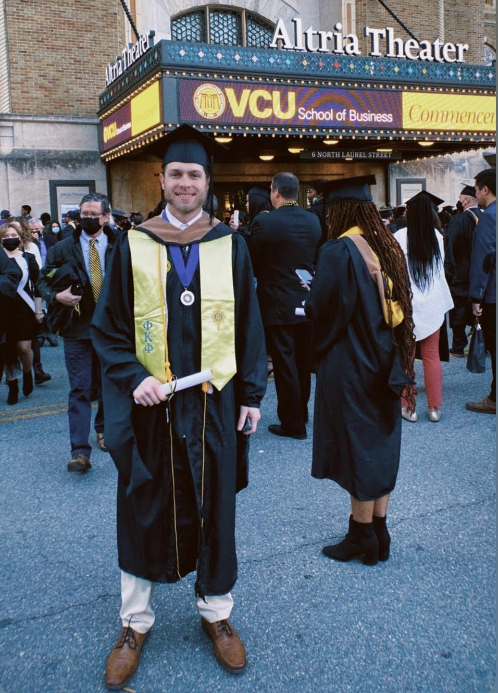

About
Me

Analyst Professional with 4.5 years’ work experience in various data and technical roles. Currently practicing Data Science and Machine Learning. I build and implement systems and models that solve problems and optimize business processes using descriptive, predictive and prescriptive analysis to drive strategic decisions.
- 🎓 Completed my Masters in Decision Analytics (M.D.A.) while working as an analyst full time 💼 in various data and technical roles
- 🌱 Proven experience in querying, preprocessing, visualizing, modeling, classifying, optimizing and presenting data using a variety of methods and tools.
- ⚡ I have persistent curiosity, continuous desire to create practical value and excellent communication skills with ability to build lasting relationships.
- 📶 I welcome you to join me on my data/tech learning journey. To get to know me more, I highly encourage you to view my GitHub Repositories, Academic Transcript and Resume. Feel free to connect me on LinkedIn or give me a follow on Datacamp or GitHub to stay in the loop!
Education
- Master of Science in Decision Analytics (M.D.A.) December, 2021
-
I received my M.D.A. from Virginia Commonwealth University (Richmond, VA) in December 2021. I was advised by industry leading professors such as Dr. J. Paul Brooks, Dr. Jason Merrick, Dr. Peter Aiken, Dr. Stephen Custer and many more. I worked full time at the State Corporation Commission (SCC) while earning my degree. To learn more about my research during VCU's M.D.A. program, view my M.D.A. Course Infomation Github Repository for a full list of courses taken.
The Honor Society of Phi Kappa Phi (ΦΚΦ)In November of 2021, I was nominated to be a member of the nation’s oldest, most selective, and most prestigious all-discipline honor society. The extremely high election standards consist of class standing (top 10 percent of graduate students), GPA and good character.
- Bachelors of Science In Business Administration (B.S.B.A.) May, 2017
-
I received my B.S.B.A. with a focus on Management from East Carolina University (Greenville, NC) in May of 2017. Dr. Craig Williams , Anthony David (T.D.) Gribble and David Mayo were a few of my favorite professors.
Programing and Tools


 >
>


- Python (python 3, Juypter Notebooks):
- Pandas, NumPy, SciPy, Pyomo, GLPK, Matplotlib, Scikit Learn, Plotly
- R (R-Studio):
- Dplyr, tidyverse, Ggplot2, Caret, Plotly, rpart, randomForest, data.table, tsibble, pastecs etc.
- SQL (Postgres SQL, SQL Server, AQT, Oracle APEX)
- MS Excel
- Goal seek, solver, Palisade Decision Tools (Risk for Monte Carlo simulation, Precision Tree for decision trees and StatTools for statistical analysis and forecasting)
- Tableau
- MS Power BI
- KNIME
- Snowflake
- HTML
Skills and Topics
- Machine Learning Concepts
- Predictive Modeling
- Decision and Risk Analysis
- Statistical Analysis (t-tests)
- Optimization
- Classification & Clustering
- Project Management
- Data Visualization
Personal
My personal research ambitions outside of my direct experience and projects focus on learning Data Science and Machine Learning by reading a variety of articles, taking coding certifications via Data Camp and applying knowledge to scenarios at my work (SCC).
Outside of Data Science, I love to workout, do outside activities such as golf, soccer, mountain bike, kayak, fish etc. and travel with family and friends.